課題「重い箱、軽い箱」
2つの箱を上から落下させる。その際、落下速度、跳ね方、モノの色、振動など、あらゆる表現を用い、重いと軽いの違いを表現する。
- 【注意点】
-
- 同じ空間内で落下させること。（画面を仕切ったりしてはいけない）
- 落下させるタイミングをずらしても良い。
- 2つの箱以外の要素を登場させても良い。ただし、限度を守ること。
- 提出期限：11/1[水] 9:30まで
- 提出先：Googleドライブ
- 01_浅野
- 02_飯田
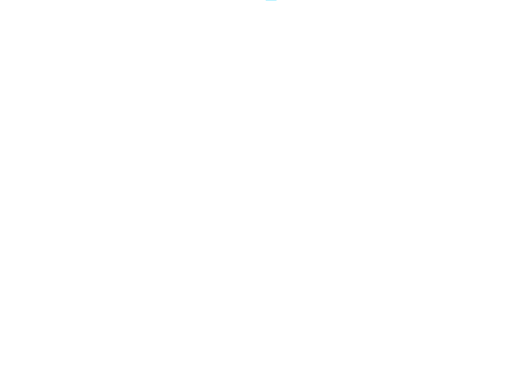
-
- 重量感もよく伝わります。また、枠を使っているし、ループのアニメーションも面白いと思いました。
- 03_伊藤
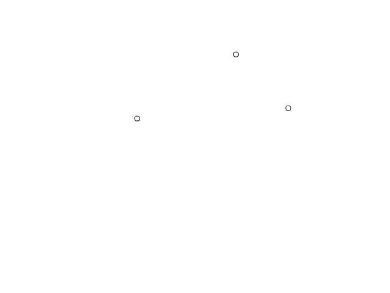
-
- 箱の動きと大きさがいい感じに表現できている、良き。
- 小石の表現が上手かった。 サイズも小さく、色も大きい石より薄いので強調されてなく対になっている。
- 04_岩本
-
- ゆっくり落とすことで、軽い感じが出ている。重い箱はあまり弾まず、重さを表現できていると思う。
- 黒は重たい色だし、淡い水色は軽そうだし、色から伝わってきます！ ふんわりと落ちてくるのが心地よいです。
- 06_岡山
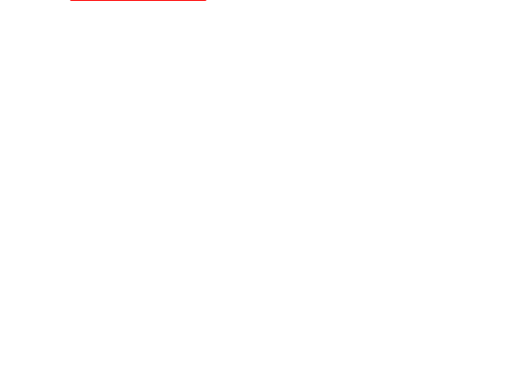
- 07_沖山
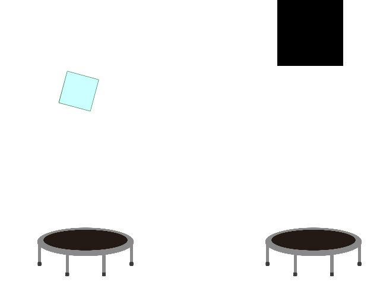
-
- 動きがとっても良かったです。
- トランポリンを使って、反動の違いで重さを表現すると思いきや、トランポリンごと吹っ飛ばすという発想が刺さった。
- 08_梶田
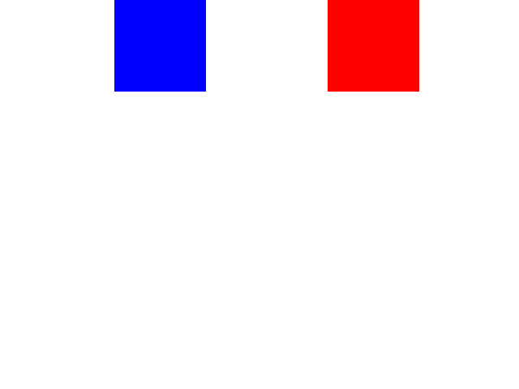
- 10_坂上
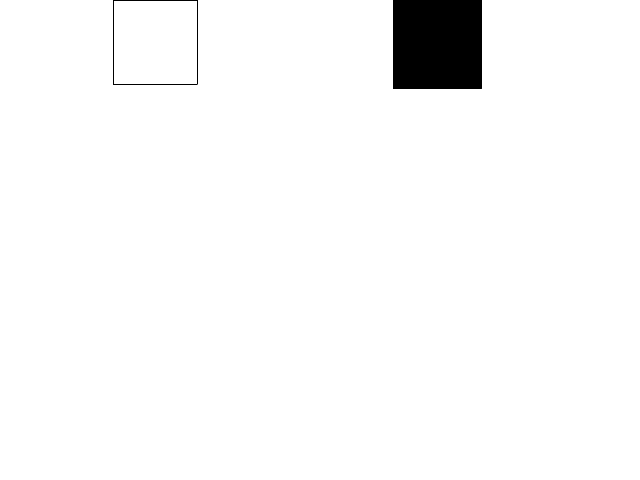
-
- ドン！！が可愛いしワンピースみたい。
- 「ドン」が普通に面白かった。
- シンプルだけど細かい部分までこだわっていていいと思った。
- 「ドン」がいいと思った。
- 動き自体も良かったと思いますが、相手に伝わるように文字を出しているのは好感度が高かった。動きに文字が出るタイミングもあっていて、丁寧な作品だと感じました。鈍い音を文字で鳴らして表現する方法はジョジョなどの漫画でよく見るなと感じました。
- 11_櫻井
- 12_柴田
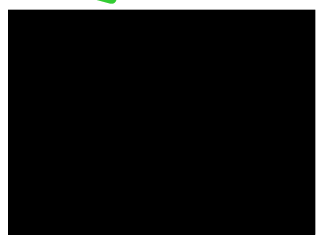
-
- 重い、軽いの表現が一番伝わった。
- 他の作品とは違って軽いものはふわふわしている感じがすごい。
- 軽い方は風船のように表現していて、重い方はそこを貫通している違いを出せていたのが良かったです。
- 13_島田
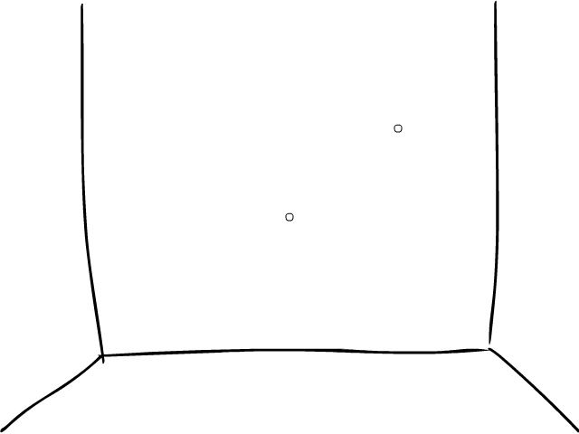
-
- 重い箱を落としたら軽い箱が跳ねる演出があり、うまく重さの違いが出ていたと思う。
- 重い箱の落下後のヒビ割れを表現していて重みを感じ取れる。
- 地面にヒビが入るのが重さを感じてすごく良いと思いました。
- 地割れを使って重さを表現していて、振動で軽い方も動いているのがいいなと思いました！
- 単純な動きだけど速さや跳ねる大きさで上手く重さを表現できている。
- ひび割れはわかりやすい。
- 重い箱が落ちた時、ヒビが入っていて軽い方の箱がはねるのがいいと思った。
- ひび割れや、重い箱が落ちた後の軽い箱の動きがよかった。
- 重い方が落ちた衝撃で軽い方が跳ねる表現が面白いと思いました。
- 細かいアニメーションまでこだわっていていいと思った。
- 重い箱が落ちてきて軽い箱が衝撃で跳ねる表現がわかりやすく感じました。
- 重いものが落ちた後反動で軽いものが跳ねたのが工夫されていてとてもいいと思いました。
- 重いものがものすごく重いんだなと感じた表現のうまさと、重いものが落下した時に軽いものが影響されて再びバウンドするところが細かくていいなと思いました！
- 14_清水
-
- 軽い箱の方も綺麗に動いていてその後に来る重い箱も跳ねる動きを少なくしていて重さの違いがすごく伝わってきた。色も白と黒で分かりやすい。
- 落とすだけではなくて潰すことで軽さの表現をしているから。
- 重い箱が落ちてきたときの動きが面白くて重さが伝わったから。
- 重いほうがわかりやすくて潰れた感じがわかりやすい。
- 15_スベディ
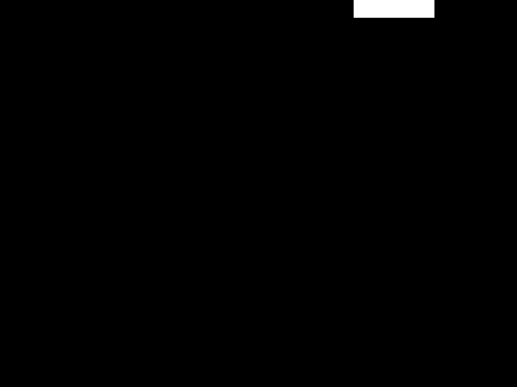
- 16_長瀬
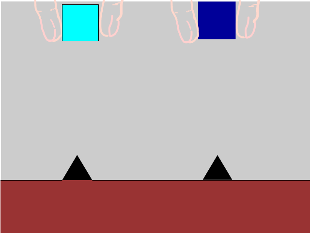
-
- 指もつけてあって、重い箱と軽い箱がすぐにわかった。
- 軽い重いがわかりやすかった。
- 指も丁寧にかかれていたのと地面のひび割れで重さを出していてよかったです。
- 日々の入り方がリアルだったのと、手が上手すぎました。
- ただ落ちるモーションだけじゃなくて落ちた後地面が割れるようなのが面白かったです。 軽い方は針に刺さらずに落ちたのもアイディアがいいと思いました。
- 三角の上に落としたり、ヒビが入ったりと、様々な周りのものを使って重さを表現していて、見ていて伝わりやすかったです。
- 17_野々垣

- 18_橋本
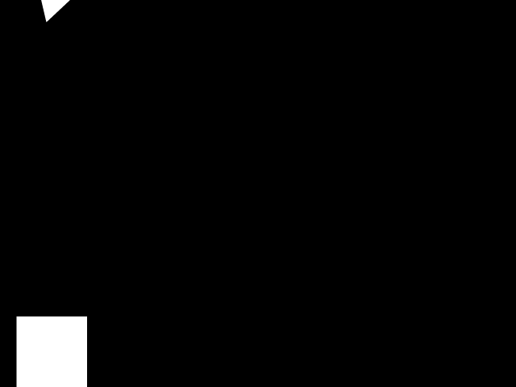
- 20_花房
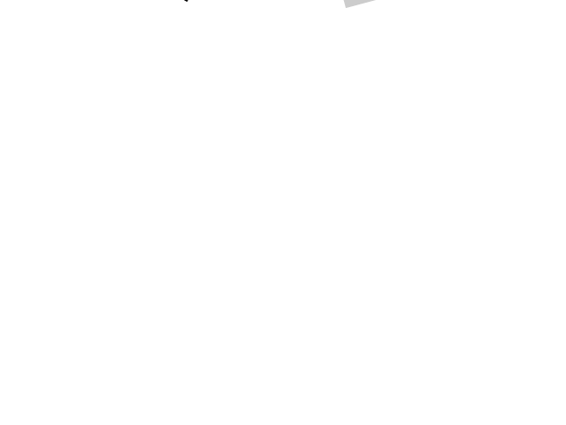
-
- 不自然さがなく、綺麗な動きだった。
- 22_古橋
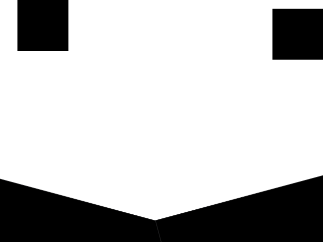
-
- 坂を利用していてとてもわかりやすかった。
- 地面を斜めにして表現してて面白いと思った。
- 重い物体と軽い物体ぶつかったあとの物理的な動きがとてもリアルでした。
- 等速ではなくイージングを使って滑らかに自然な動きが作れているのが特徴的。重さの違いの表現もお互いを斜面に滑らせぶつけ合わせる事によってうまく対比できている。
- 違和感がなくリアルな動きだった。
- 23_堀
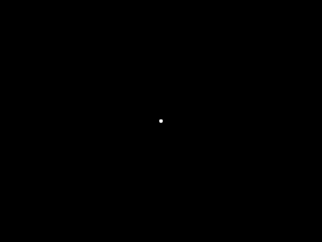
- 24_松岡

- 25_山内
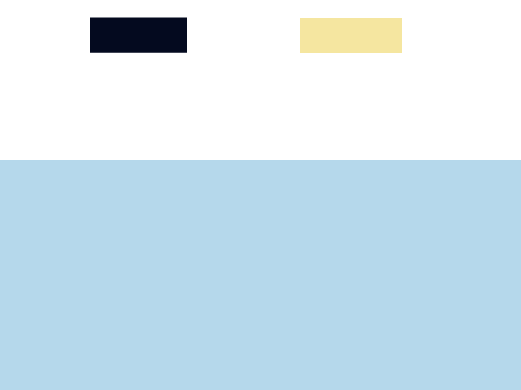
-
- 水の中という発想がすごい。
- 水があることで重さがわかりやすく伝わってきたから。
- 水の中というアイデアがすごいと思ったし、重い箱と軽い箱がわかりやすかった。
- 黄色より黒色のほうが重いとか強いと見せています。
- 水の表現が面白いと思った。
- ぷかぷか浮いている表現がとても良かったと思います。
- 個性的で表現のしかたが良かった。
- 表現の仕方が面白い、軽い重いがわかりやすい。
- 水で重さを表現するという発想とそれができる技術がすごいと思った。
- 軽さがよくわかるし、水の抵抗も描かれているのが良いと思いました。
- 水に浮くか沈むかで、軽い重いを出してるのはいい考えだと思った。 泡も出てるし細かいところもアニメーションしていて普通に作品としてすごい。
- 水を使って重さを表現していて、どっちが重いのかわかりやすくて良かったです！
- 空中に落とす発想しかなかったけど水中に落としていて、重さの表現がわかりやすかったから。
- 水の上でのアイディアが良かったです。
- 水の浮力を使って表現する方法がとても魅力的でした。 細かく水も動いているので伝わりやすいと思ったから。
- 水に落とすことは全然思いつかなかったから、まずアイデアがすごいと思いました。そして、沈み具合で表現しているのもすごく重い軽いがわかりやすいと思いました。
- 水を使って重い軽いを表現しているところがわかりやすく、かつ自然な動きだった。
- 軽いものと重いものをよく理解している感じがして、他の人は落とすだったけど水の上に浮かべる発想は画期的だと思った。アニメーション自体も見ずに浮いている感じが伝わってきて、色合いも重みのある色と重さを感じない色で分けられているのが個人的に良かった。
- 水に落とした時に泡が出ていて表現が細かく、水に落とすという発想が面白いと感じました！
- 落ち方が結構リアルに作られていた。
- 水を使うとわかりやすい。
- 水で表現する発想がとても面白いと思いました。
- 水というものを使ってよりはっきり違いがわかる。
- 重さの違いを視覚的にわかりやすく表現できているのはこの作品。抽象的な箱同士の重さの対比ではなく現実世界に存在する水を使うことで全ての人が重さを想像しやすい。等速ではなくイージングを使って滑らかに自然な動きが作れているのも特徴的。